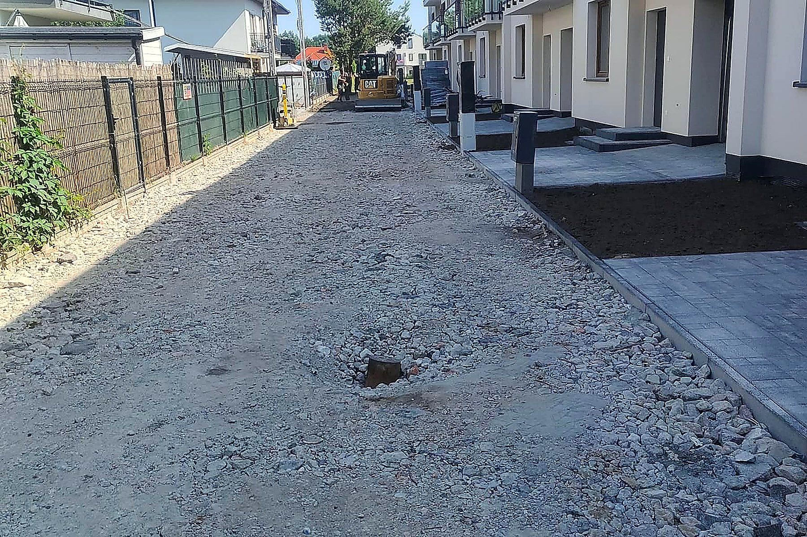
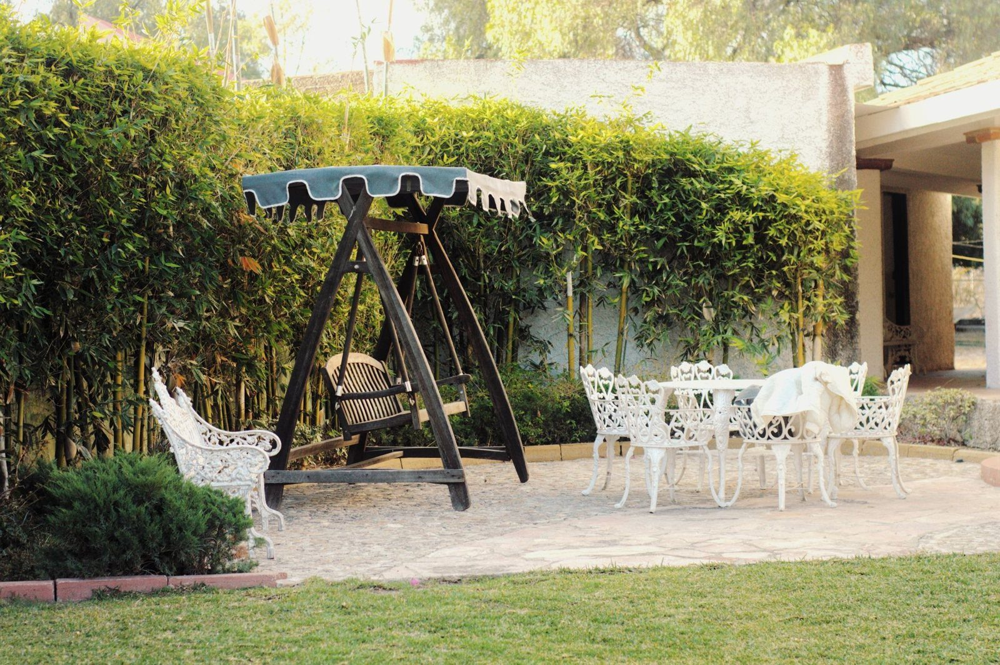
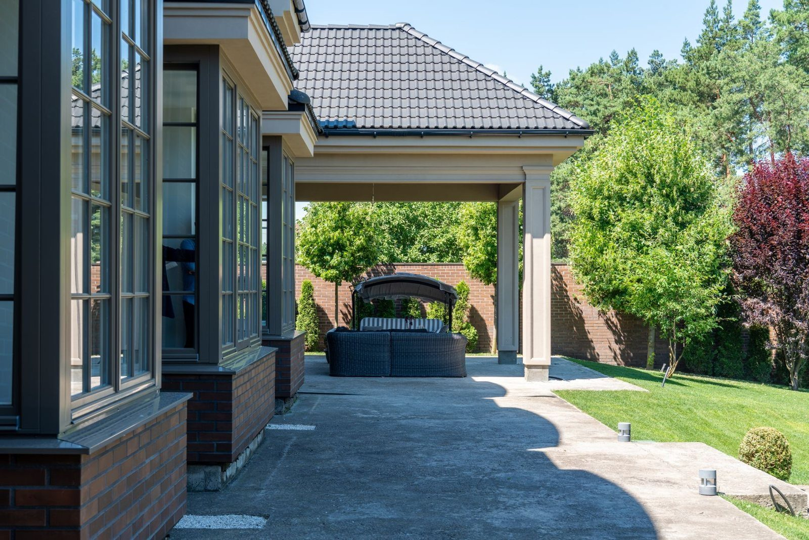
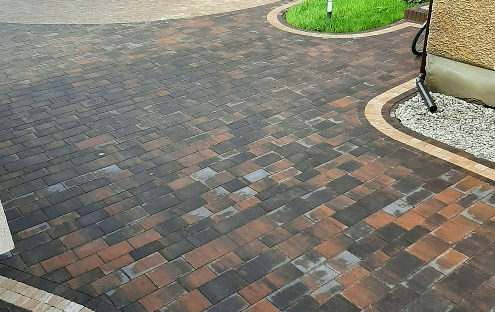
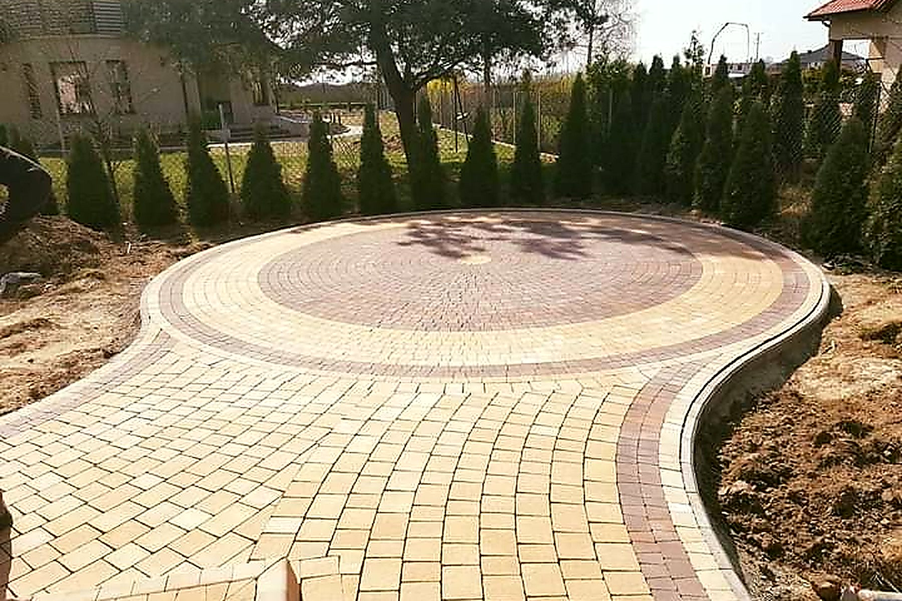

Zakres robót

Podjazdy i dojazdy
Podjazd codziennie trzyma auto, więc najwięcej pracy idzie w spód: koryto na właściwą głębokość, kruszywo zagęszczane warstwa po warstwie, podsypka i dopiero kostka - pod auto grubsza niż na ścieżkę. Spadki prowadzimy od garażu, żeby woda spływała na trawnik, a nie pod bramę.

Tarasy i ścieżki
Kostka, płyty tarasowe czy granit - każdy materiał inaczej znosi słońce, mróz i mech. Zanim wybierzesz, pokażemy, jak dany materiał zachowuje się po kilku sezonach, a nie na zdjęciu z katalogu. Taras ma pasować do domu przez lata, nie przez pierwszy sezon.

Place i parkingi
Plac manewrowy czy parking to inna robota niż ścieżka - auta dostawcze wymagają głębszego koryta i mocniejszego zagęszczenia. Robimy większe powierzchnie z wytyczonymi spadkami i odwodnieniem, żeby po ulewie dało się przejść suchą nogą, a nawierzchnia zniosła codzienny ruch.

Palisady, obrzeża i schody
Skarpa przy domu ucieka albo trawnik wchodzi na ścieżkę? Palisady i obrzeża wyznaczają twarde granice - ziemia zostaje na swoim miejscu, nawierzchnia na swoim. Wysokość i kolor dobieramy do kostki, żeby całość wyglądała jak jeden projekt, a nie doklejane elementy.

Odwodnienia liniowe
Kałuża pod bramą i mokra ściana garażu to znak, że woda nie ma dokąd spływać. Układamy odwodnienia liniowe, korytka i wpusty, i łączymy je ze spadkami nawierzchni - woda schodzi tam, gdzie ją kierujemy, a nie pod fundament.

Podbudowa i korytowanie
To, czy nawierzchnia przetrwa, rozstrzyga się pod ziemią. Koryto na właściwą głębokość, geowłóknina tam, gdzie grunt słaby, kruszywo sypane warstwami - każdą przejeżdżamy zagęszczarką, zanim wjedzie następna. Nudna robota, której nie widać. To ona trzyma całość.
Która z usług Cię interesuje?
Napisz, co chcesz zrobić - odpowiemy z propozycją i wyceną.